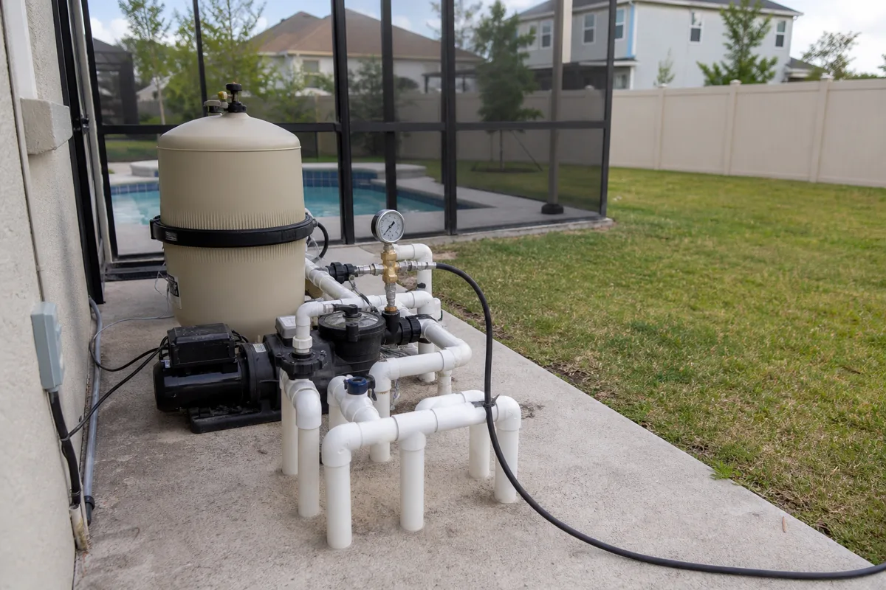
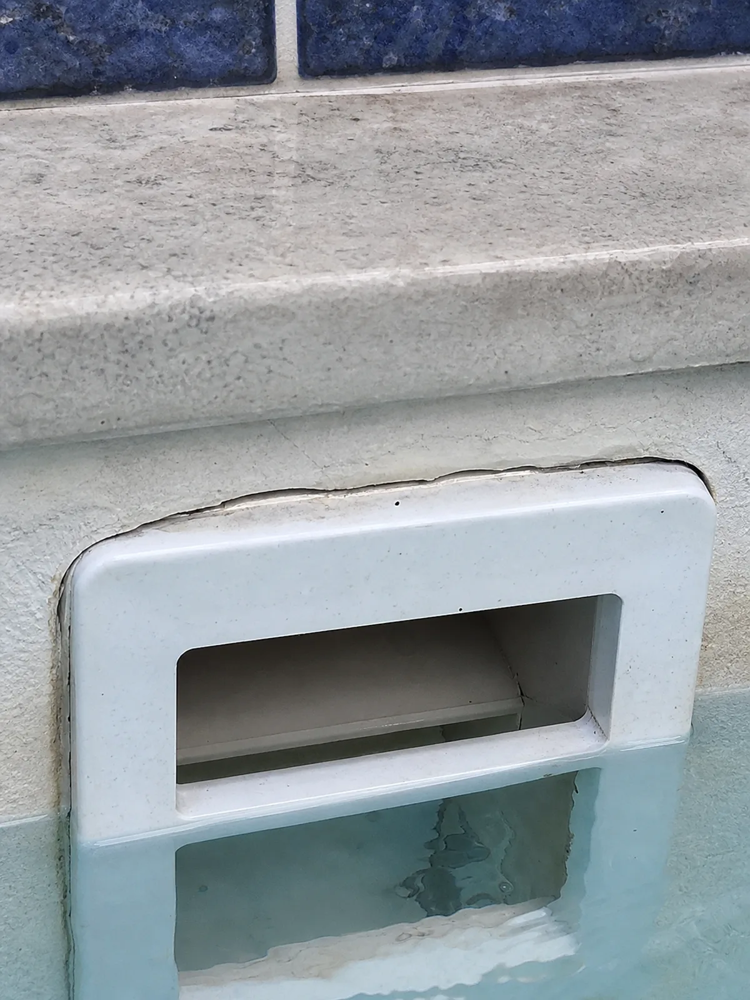
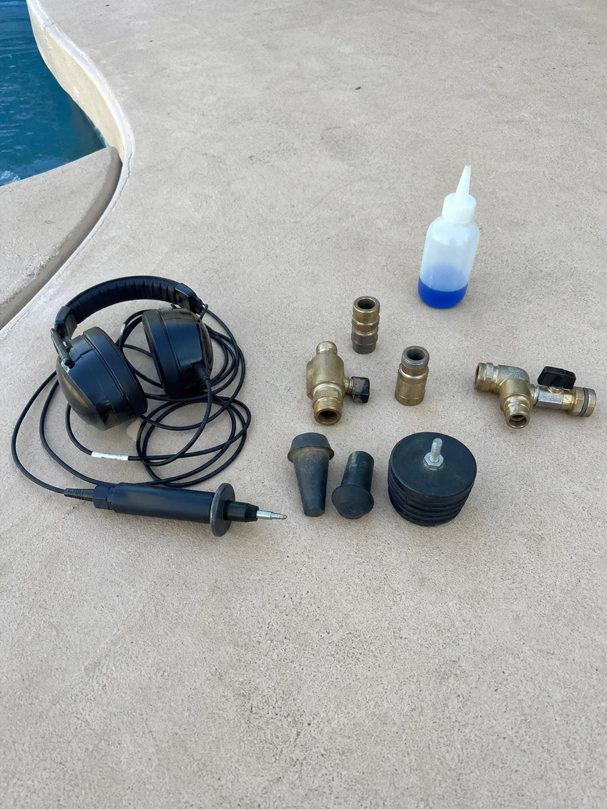
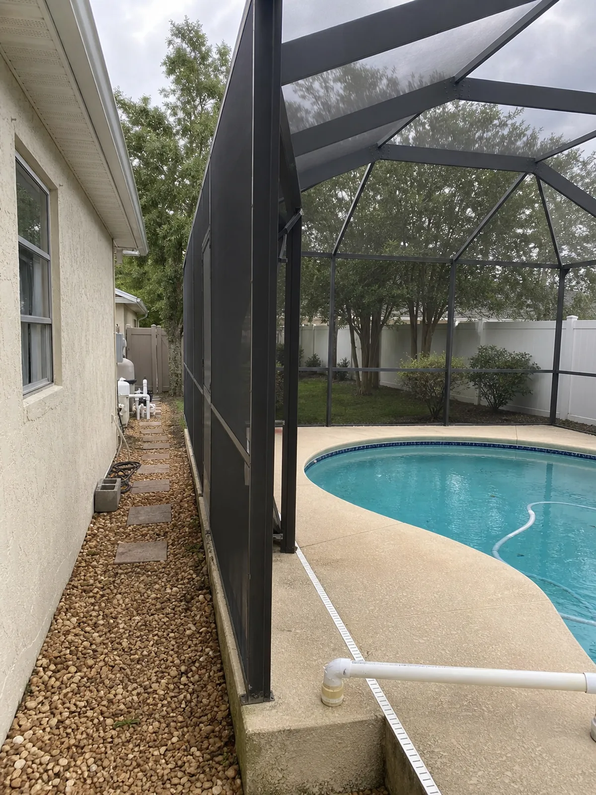
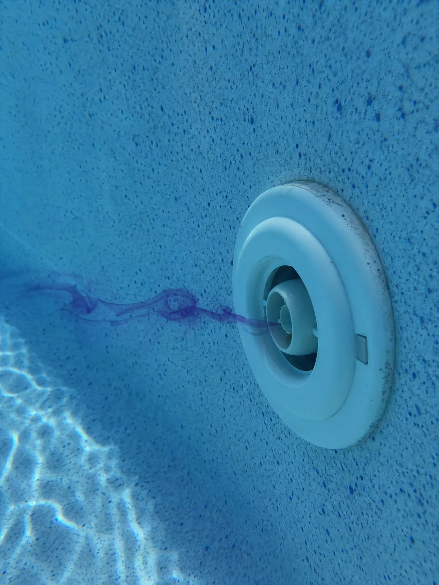
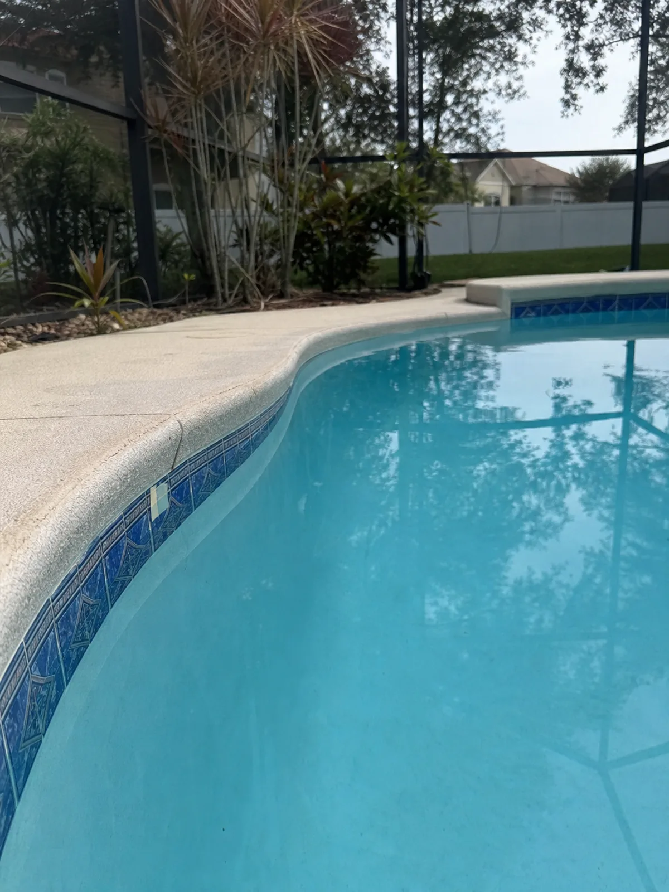

Pool Leak Detection in Orlando, FL
Pool Leak Detection Orlando helps Central Florida pool owners find and confirm hidden leaks using pressure testing, dye testing, and electronic listening equipment — without draining the pool or guessing. If the water level keeps dropping, the autofill runs constantly, or the deck and equipment pad stay wet, a leak test pinpoints where the water is going before it runs up your bill or undermines the deck.
Isolate and test each plumbing line to find leaks below the deck.
Confirm leaks at the shell, fittings, skimmer, and light.
Pinpoint pressurized-line leaks under slabs and decking.
Tell us what your pool is doing
You can start with a simple note like “the water keeps dropping” or “the autofill keeps running.” We’ll follow up to understand the symptoms and confirm next steps.
Common Places Pool Leaks Show Up Around Orlando Homes
Pool leaks often start around the equipment pad, skimmer, fittings, lights, deck access points, or shell details. Testing helps narrow the source before repair scope is discussed.



Pool Leak Detection Services for Common Water-Loss Problems
Every job starts by confirming where the water is going. From there, the repair is matched to what the test actually finds — not a guess.
Pool Leak Detection
Locate and confirm where a pool is losing water, with the pool full and running.
Detect the leak →Pool Plumbing Leak Detection
Pressure-test suction and return lines to isolate underground plumbing leaks.
Test the lines →Pool Leak Repair
Fix what the test finds — shell cracks, fittings, seals, and plumbing lines.
Repair the leak →Skimmer Leak Detection & Repair
One of the most common leak points in Central Florida pools, at the skimmer throat and body.
Check the skimmer →Pool Light Leak
Light niches and conduit runs are a frequent hidden path for water to escape.
Check the light →Why Is My Pool Losing Water?
Tell normal Central Florida evaporation from a real leak before you spend on repairs.
Leak or evaporation →What a pool leak is actually costing you
A leak is not just a nuisance you can top off with the hose. Even a slow one runs up real costs every week it goes unfixed — which is why finding it early is usually the cheaper decision.
Wasted water
Half an inch a day beyond evaporation on an average pool is roughly a hundred-plus gallons a day — over a thousand gallons a week going straight into the ground and onto your water bill.
~1,000+ gal / weekWasted chemicals
Every gallon of makeup water dilutes your chlorine, stabilizer, and salt. You buy more and add more just to hold the balance steady on water that's leaking out.
Chlorine · stabilizer · saltStrain on equipment
A low water level lets the pump pull air and lose prime. Running dry is hard on the pump and heater, and air in the system points to a suction-side leak worth finding.
Pump · heater · sealsDamage to the yard and deck
Water escaping underground erodes the soil under the deck and around the shell. Over time that shows up as settling, hollow spots, and cracked decking — a far bigger repair than the leak.
Erosion · settling · cracksIt gets worse, not better
A weeping fitting or a hairline crack rarely seals itself. Water moving through it tends to widen the path, so a small early fix can turn into a major one if it's ignored.
Small fix → big fixPeace of mind
Guessing is its own cost. A leak test replaces months of topping off and worrying with one clear answer: where the water is going, and what it takes to stop it.
One clear answerWhat's normal water loss, and what isn't
Central Florida pools lose water every day, so some drop is expected. The goal is telling ordinary evaporation apart from a pattern that's worth testing.
Normal — usually just evaporation
- Losing up to about a quarter-inch a day, fairly steadily
- More loss in peak summer heat and on dry, windy days
- A little faster with a screen enclosure that still moves air
- The autofill tops off a modest amount and then shuts off
- No wet spots, no new cracks, no air in the system
Abnormal — worth a leak test
- Losing more than about a quarter to half an inch a day
- The drop is faster with the pump running, or faster with it off
- The autofill never seems to shut off, or your water bill climbs
- Wet spots, soft ground, or erosion near the pad or deck
- New cracks in the shell, loose tile, or air bubbles at the returns
For routine cleaning, chemistry, or equipment-care questions outside Central Florida, keep separate pool services notes so maintenance issues do not get confused with leak symptoms. For a separate maintenance checklist, track pool service items away from leak-test observations.
What Gets Checked During Pool Leak Detection
Not every leak is visible from the surface. A good inspection compares the water-loss pattern against fittings, access points, and the equipment layout.



How pool leak detection works
A real ordered process, so you know what you're paying for and what you'll walk away knowing.
Measure the water loss
A level or bucket check establishes how much water you're actually losing, and whether the pattern points to the plumbing or the shell.
Pressure, dye, and listening
Pressure testing on the lines, dye testing at the shell and fittings, and electronic listening narrow the loss to a specific point.
Locate it and explain the fix
You get a clear location and what it takes to repair it, matched to what the test found — from a fitting to a plumbing line to a shell crack.
What affects the cost of a leak test
Cost depends on the pool's size and plumbing layout, how many lines have to be pressure-tested, access to the equipment pad and deck, and whether it's one suspected leak or a whole-pool test. Because it depends on the specific pool, pricing is confirmed on a quick call rather than quoted blind.
See cost factors →Pool leak detection across Central Florida
Serving Orlando, Winter Park, Lake Nona, Windermere, Oviedo, and Kissimmee. Older Orlando-area pools tend to leak at aging skimmers, fittings, and plumbing joints; newer Lake Nona pools leak too, where settling and autofill systems quietly hide the loss.
See service areas →FAQs About Pool Leak Testing
Do you have to drain my pool to find a leak?
No. Leak detection works with the pool full. Pressure testing, dye testing, and electronic listening locate the leak without draining the pool.
Can you tell a real leak from normal evaporation?
Yes. A level test measures your actual water loss and compares it against expected Central Florida evaporation, so the answer is measured rather than guessed.
How much water does a leak really waste?
More than most people expect. Half an inch a day beyond evaporation on an average pool is over a thousand gallons a week, plus the chlorine and salt that leaves with it.
I don't know where the leak is — can I still ask for help?
Yes. Describe what you're noticing and the call can focus on the right test path. You don't need to find the leak yourself before reaching out.
Do you cover my area?
We serve Orlando, Winter Park, Lake Nona, Windermere, Oviedo, Kissimmee, and nearby Central Florida communities. Mention your city on the quote form and we'll confirm.
Losing water and not sure why?
Request a leak test and get help figuring out where the water is going — before it costs you more.